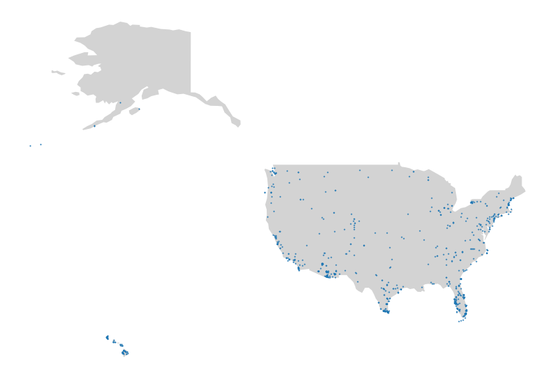

Cornell eBird¶
import geopandas as gpd
import matplotlib.pyplot as plt
import os
import pandas as pd
import requests
key = os.getenv("EBIRD_API")
Observations in US (past 7 days)¶
API documented here
url = "https://api.ebird.org/v2/data/obs/US/recent"
r = requests.get(url, {"key": key, "back": 7, "includeProvisional": "true"})
data = r.json()
print(f"There were {len(data)} observations reported in the last 7 days.")
There were 748 observations reported in the last 7 days.
Data Exploration¶
df = pd.DataFrame.from_records(data)
df.head(5)
| speciesCode | comName | sciName | locId | locName | obsDt | howMany | lat | lng | obsValid | obsReviewed | locationPrivate | subId | |
|---|---|---|---|---|---|---|---|---|---|---|---|---|---|
| 0 | daejun | Dark-eyed Junco | Junco hyemalis | L13326430 | 1218 Turpin Ln, Baltimore US-MD 39.30460, -76.... | 2021-12-07 11:57 | 1.0 | 39.304567 | -76.606622 | True | False | True | S98586698 |
| 1 | amekes | American Kestrel | Falco sparverius | L17053236 | Villa City Rd, Leesburg US-FL (28.6506,-81.8468) | 2021-12-07 11:55 | 1.0 | 28.650552 | -81.846813 | True | False | True | S98586749 |
| 2 | moudov | Mourning Dove | Zenaida macroura | L17053236 | Villa City Rd, Leesburg US-FL (28.6506,-81.8468) | 2021-12-07 11:55 | 2.0 | 28.650552 | -81.846813 | True | False | True | S98586749 |
| 3 | snoowl1 | Snowy Owl | Bubo scandiacus | L17053215 | 538 Ocean Boulevard, Seabrook, New Hampshire, ... | 2021-12-07 11:55 | 1.0 | 42.885900 | -70.818986 | True | False | True | S98586636 |
| 4 | normoc | Northern Mockingbird | Mimus polyglottos | L17053236 | Villa City Rd, Leesburg US-FL (28.6506,-81.8468) | 2021-12-07 11:55 | 1.0 | 28.650552 | -81.846813 | True | False | True | S98586749 |
There are always privacy considerations when using geographical data. Here, we not only have latitudes and longitudes, but also users’ nicknames for those locations. In some cases, those are full addresses. In others, they may leak some personal information (see: Ron's yard).
We see this addressed in their documentation. However, I’d consider the default insecure: “you can rename the location so your address is not visible. You can also place or move the location pin to somewhere close by along your street”. It’s a hard problem for a scientific project relying on the accuracy of geolocation data, however. Another solution may be to truncate the accuracy of the the coordinates for public API users.
We should also remember that this is self reported data; this always carries certain uncertainty and bias. Are users more likely to record an exotic bird over a common one? Can we trust their howMany? Location data is also somewhat self-reported as users can move the pin (at least this restricts us to valid latitude and longitude). By playing with the app, we also know that the actual name information is categorical, not free text.
print(len(df["comName"].unique()) == len(df))
True
Why is every record a unique bird? That seems unlikely. I should review the API documentation. I would expect something like Red-tailed Hawk (a relatively common bird) to show up multiple times.
df[df["comName"] == "Red-tailed Hawk"]
| speciesCode | comName | sciName | locId | locName | obsDt | howMany | lat | lng | obsValid | obsReviewed | locationPrivate | subId | |
|---|---|---|---|---|---|---|---|---|---|---|---|---|---|
| 69 | rethaw | Red-tailed Hawk | Buteo jamaicensis | L718794 | Virginia Tech Campus | 2021-12-07 11:35 | 1.0 | 37.22481 | -80.4249 | True | False | False | S98586247 |
fig, ax = plt.subplots(figsize=(14, 10))
countries = gpd.read_file(gpd.datasets.get_path("naturalearth_lowres"))
countries[countries["iso_a3"] == "USA"].plot(color="lightgrey", ax=ax)
ax.scatter(
x=df.lng, y=df.lat, s=1
) # TODO: color by bird-type, but not worthwhile until we have some non-unique birds in the list
ax.axis("off")
plt.show()
